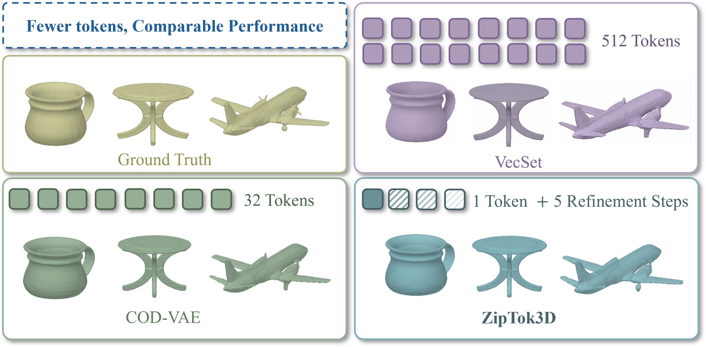
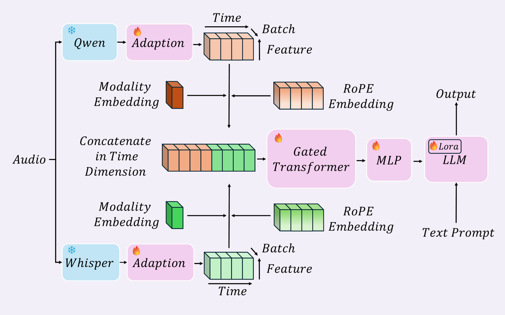

I began my undergraduate studies at Wuhan University in 2023 and will join Zhejiang University in 2027. I am currently a member of ZIP Lab, working with Prof. Bohan Zhuang since 2026. Previously, I conducted research under Prof. Gongping Huang.
My research focuses on AI agents and efficiency.
Publications


Education
Zhejiang University
2027
Incoming student
Wuhan University
2023-2027
Undergraduate student
School of Electronic Information
Communication Engineering · AI Special Class
Awards
- National Scholarship
- Provincial first prize in the Contemporary Undergraduate Mathematical Contest in Modeling
- University academic awards